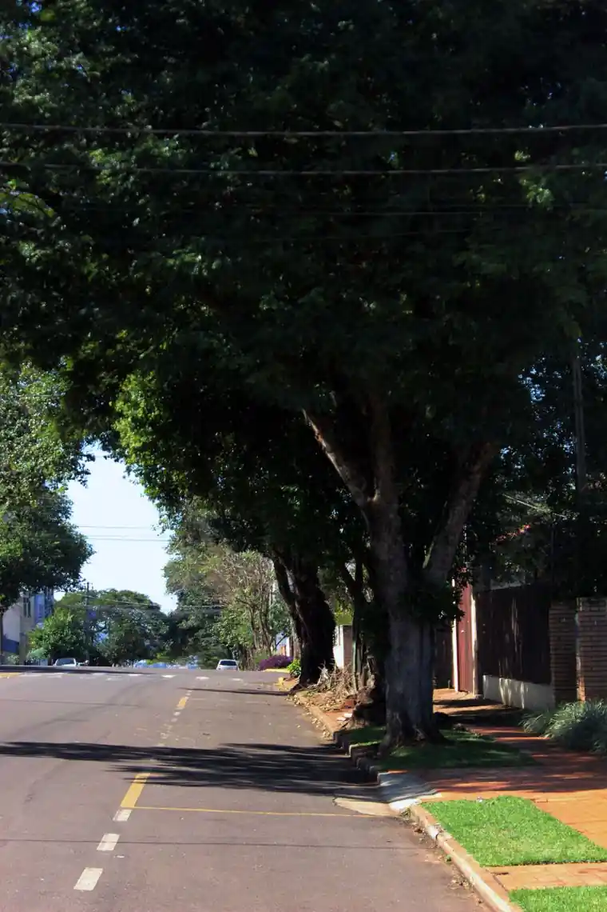
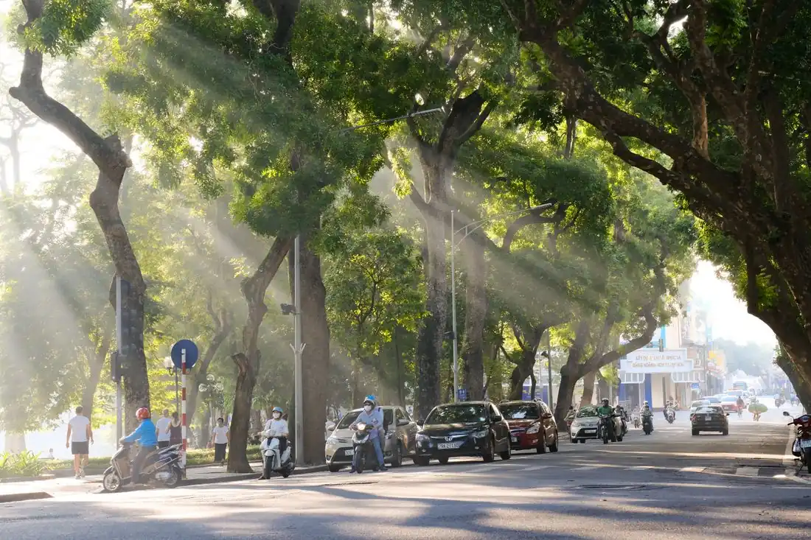
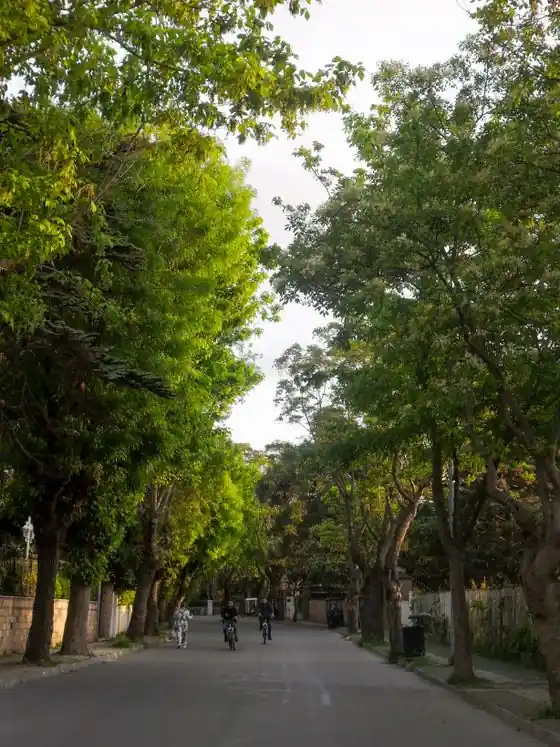
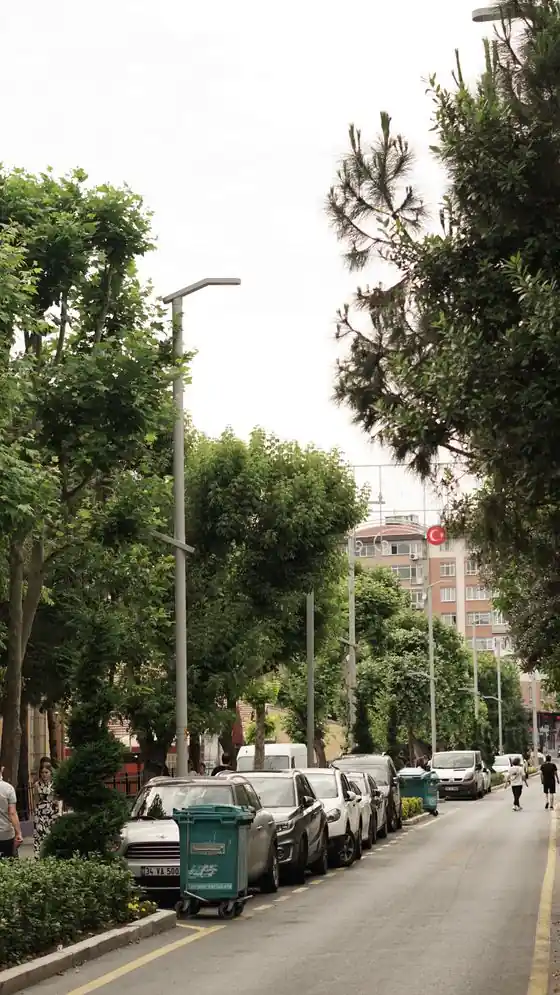
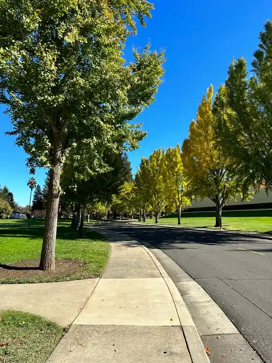
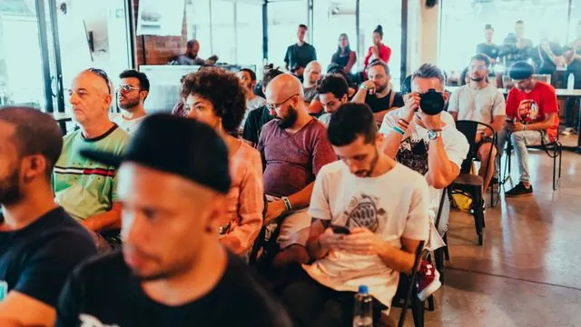
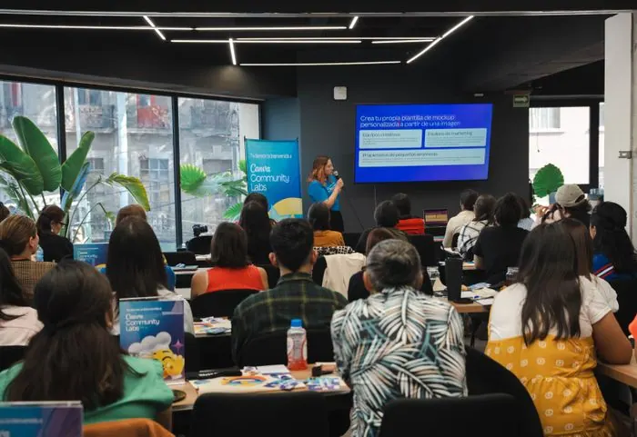
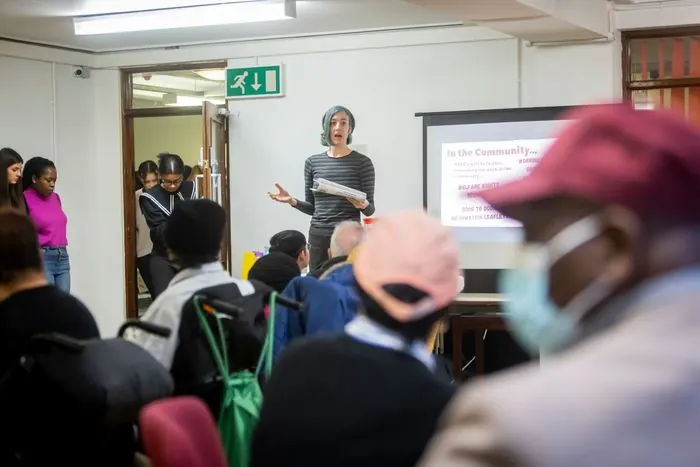
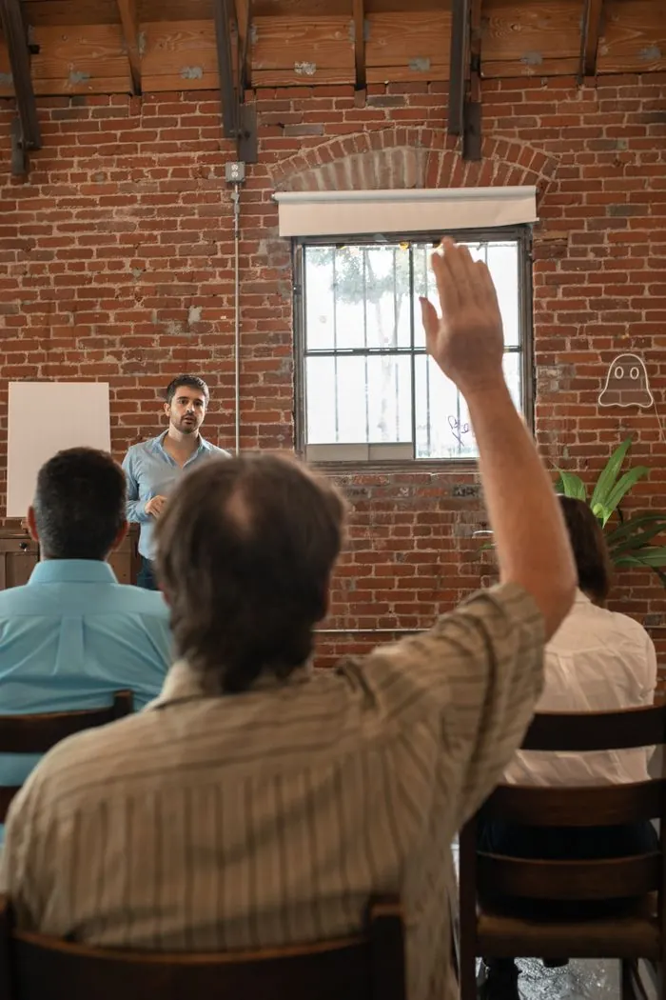
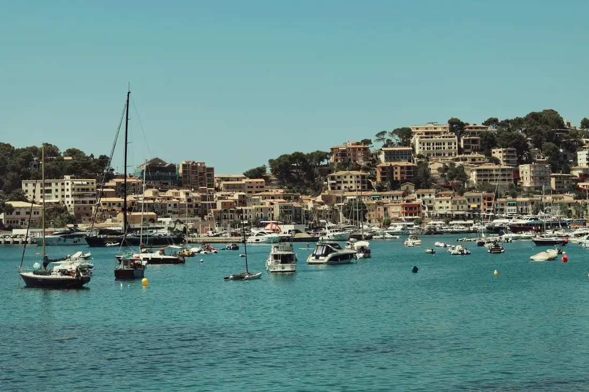

Riverside climate team
145 participants
Wanted: your idea for a better climate in the Riverside district.
Have your say on the projects and decisions shaping our city — from the harbour to your own street.
How do we make Station Road cooler, greener and healthier — more trees, more shade, more room to walk and cycle? Share your ideas in our survey. Participation closes in just a few days.


Wanted: your idea for a better climate in the Riverside district.

Wanted: your idea for a better climate in the Old Town district.

Wanted: your idea for a better climate in the Harbour district.

Wanted: your idea for a better climate in the Northgate district.

Wanted: your idea for a better climate in the Westside district.

Wanted: your idea for a better climate in the Lakeshore district.





Jun182026 Going
Jun252026
Jul022026Post your proposal on this platform, gather support and place it on the city's agenda.
Explore all proposalsWelcome to the official engagement platform of the City of Westmere. Here you can follow participation projects across our six districts, share your thoughts on the questions that matter, collect ideas and give feedback in dialogue with the city — from the harbour and Old Town to Northgate, Riverside, Westside and Lakeshore.
Sign up today and help us build a greener, more connected Westmere.
What does downtown need to become more liveable? Tell us which places, routes and ideas matter most to you.

How can Market Square become a popular meeting point in the neighbourhood?

Wanted: your ideas for a better climate in the Westside, Old Town and Riverside districts.
Participation has closed. Read which proposals are being put into action.